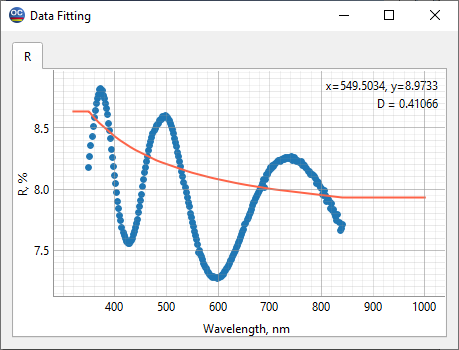
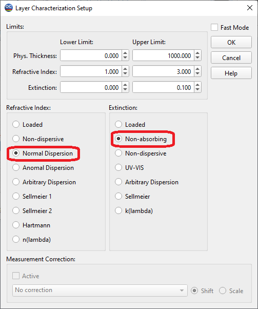
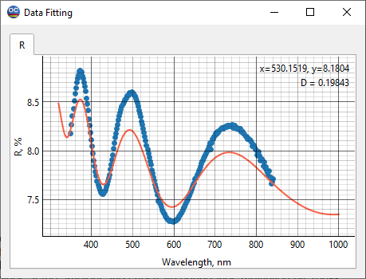
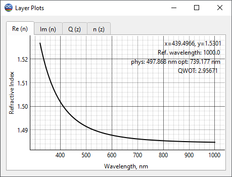
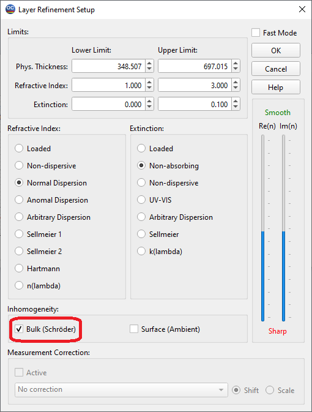
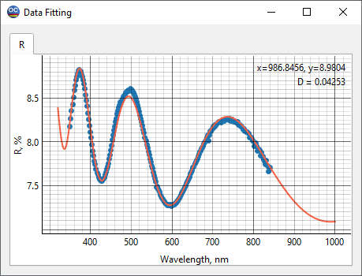
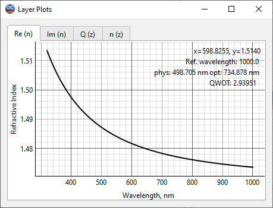
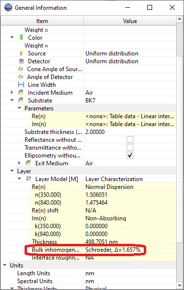

LEC24C1 – Refractive index of SiO2 on BK7 substrate
Note: The main theoretical facts needed to solve this characterization problem are presented in the text below. For a more detailed introduction to the basics of characterization theory, we recommend the book by A. Tikhonravov, Optical coatings: design, characterization, monitoring, SPIE Press, 2024
The main purpose of this example is to demonstrate the determination of the refractive index of a thin film with noticeable bulk inhomogeneity. The example presents the methodology of optical characterization using spectral photometric data. We consider SiO2 film deposited on the BK7 substrate.
In the File -> Project menu of OptiChar, open the directory LEC24C1. The datafiles needed to run this exercise are already loaded into RAM. These are the substrate BK7 and the layer measured reflectance datafile R data at 350-840 nm.
Open the Data Fitting option in the View menu. Dots in the Data Fitting window show measured reflectance data, and the solid curve represents the reflectance from the uncoated BK7 substrate. Substrate thickness is set in the line Substrate Thickness of the General Information window.

There are some very simple but extremely useful theoretical facts that should be taken into consideration when defining a layer model for characterization using spectral reflectance data.
If the considered film is non-absorbing, has no bulk inhomogeneity across the film thickness, and its refractive index is lower than the refractive index of the substrate (this is our case), then the measured reflectance maxima should coincide with the reflectance of the uncoated substrate.
If the film has bulk inhomogeneity, then the reflectance maxima will be shifted relative to the reflectance of the uncoated substrate.
In the case of dielectric materials, a small extinction coefficient (the imaginary part of the complex refractive index) has little effect on the reflectance of the film.
In the Data Fitting window we see that the reflectance maxima are shifted downwards relative to the reflectance of the uncoated substrate. In principle, a downward shift of the R and T spectral data can be related to absorption in a film. We are now investigating a SiO2 film, which is known to have only a small extinction coefficient. Thus, according to fact 3, we cannot attribute the observed shift to absorption. Therefore, according to fact 2, we should expect that our film has bulk inhomogeneity.
However, we will start our investigation with a model of a homogeneous thin film. This will allow us to see what happens if we choose inappropriate film model. Go to the Characterization -> Layer Characterization menu item. The layer model is specified by choosing models for the refractive index and extinction coefficient.
Let us choose the Normal Dispersion model. This is a three-parameter Cauchy model for the refractive index, which usually works well for dielectric films in the Near UV-Visible-Near IR spectral regions. The fourth unknown parameter of our model will be the thickness of the investigated film. It will be searched for in accordance with the Lower and Upper Limits set at the top of the window. Based on the above discussion, we set Non-absorbing model in the Extinction field.

Click OK to start the characterization procedure. Its results are displayed in the Data Fitting and Layer Plots windows. The latter shows the refractive index found during the procedure. The found refractive index is stored in the Layer Material database under the name SiO2 – homogeneous model. Pay attention to the Data Fitting window. There are significant deviations in the reflectance of our model (solid curve) from the measured data. This is due to the fact that we use an inappropriate layer model. Within the selected model, the reflectance maxima coincide with the reflectance of the uncoated substrate and they simply cannot fit the measured data around their maxima.
 
Let us move on to the Layer Refinement option of the Characterization menu. It will allow us to specify a model accounting for bulk inhomogeneity of our film. Note that this option has default models for the refractive index and extinction coefficient taken from the Layer Characterization option. To take into account the bulk inhomogeneity, simply check the Bulk checkbox in the lower left part of the window. The bulk inhomogeneity will be searched for within the so-called Schroeder’s model, which assumes a liner change (increase or decrease) in the refractive index of the film from its rear boundary to the front boundary.

Click OK to start the refinement procedure. The results are also displayed in the Data Fitting and Layer Plots windows. The Data Fitting window shows a much better fit of the measured data than before. The refractive index wavelength dependence has decreased compared to the result obtained using the homogeneous film model. This is in better agreement with the known SiO2 refractive index wavelength dependencies.
 
The degree of inhomogeneity is found to be positive (see General Information window ->Layer), meaning that the refractive index increases from the back boundary of the film to the front boundary. Such an increase is quite common for films produced using high energetic deposition processes. The degree of inhomogeneity is expressed as a percentage of its relative change compared to its mean value.
